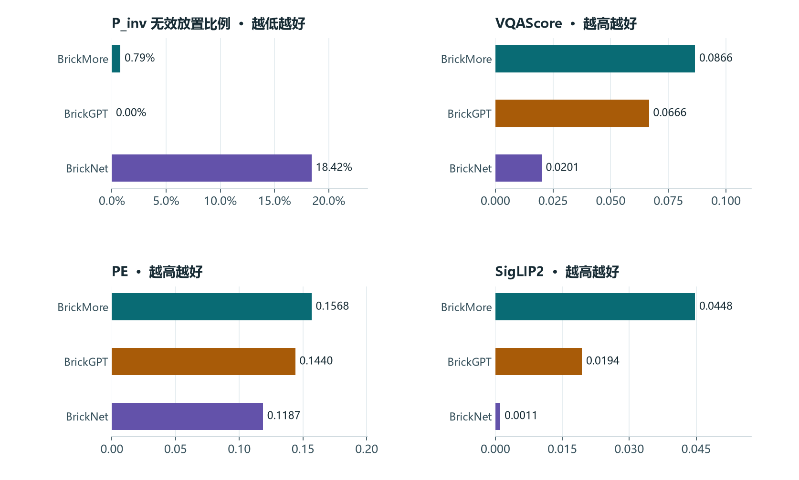
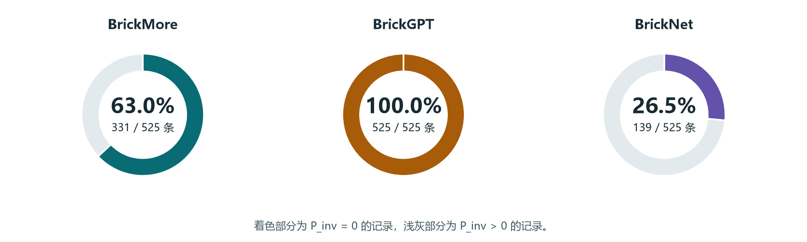
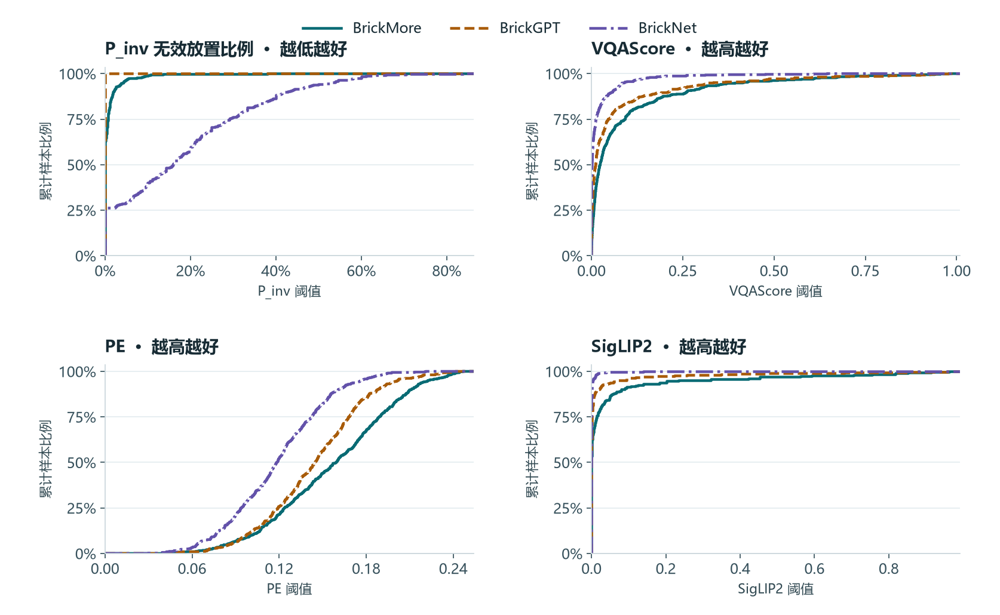
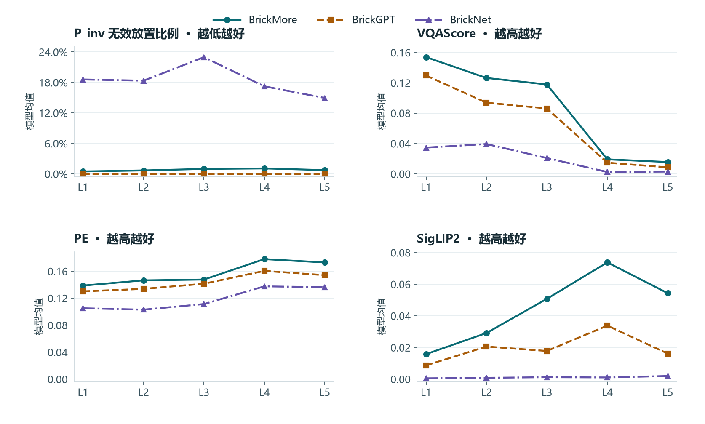

四项指标总体均值
BrickMore 的 VQAScore、PE、SigLIP2 均值最高。BrickGPT 的无效放置比例均值最低。 三种模型各用相同的 525 条提示词，每条等权。

无效放置比例为零的样本占比
圆环中央显示各模型无效放置次数为零的样本数及占比。

逐样本累计分布
横轴是分数或比例阈值，纵轴是低于或等于该值的样本占比。P_inv 曲线越靠左，低无效放置比例的样本越多。图文指标曲线越靠右，高分样本越多。

L1 至 L5 的均值变化
每级有 105 条共同提示词，每个点是对应等级内的模型均值。

三个模型的 VQAScore 均值从 L3 到 L4 均有下降，同期 PE 均值均有上升。不同指标反映的变化方向不一定相同。
描述统计与逐题配对
四项指标描述统计
| 指标 | 模型 | 样本数 | 均值 | 中位数 | 样本标准差 | 最小值 | 第 25 百分位 | 第 75 百分位 | 第 90 百分位 | 最大值 |
|---|---|---|---|---|---|---|---|---|---|---|
| P_inv | BrickMore | 525 | 0.79% | 0.00% | 2.41% | 0.00% | 0.00% | 0.69% | 1.90% | 38.02% |
| P_inv | BrickGPT | 525 | 0.00% | 0.00% | 0.00% | 0.00% | 0.00% | 0.00% | 0.00% | 0.00% |
| P_inv | BrickNet | 525 | 18.42% | 15.91% | 17.24% | 0.00% | 0.00% | 29.17% | 42.30% | 83.78% |
| VQAScore | BrickMore | 525 | 0.0866 | 0.0239 | 0.1567 | 0.0000 | 0.0069 | 0.0928 | 0.2610 | 0.9800 |
| VQAScore | BrickGPT | 525 | 0.0666 | 0.0117 | 0.1493 | 0.0000 | 0.0020 | 0.0462 | 0.2113 | 0.9791 |
| VQAScore | BrickNet | 525 | 0.0201 | 0.0019 | 0.0582 | 0.0000 | 0.0001 | 0.0127 | 0.0582 | 0.6459 |
| PE | BrickMore | 525 | 0.1568 | 0.1593 | 0.0427 | 0.0477 | 0.1238 | 0.1891 | 0.2107 | 0.2466 |
| PE | BrickGPT | 525 | 0.1440 | 0.1448 | 0.0356 | 0.0495 | 0.1195 | 0.1680 | 0.1878 | 0.2407 |
| PE | BrickNet | 525 | 0.1187 | 0.1183 | 0.0336 | 0.0298 | 0.0941 | 0.1423 | 0.1607 | 0.2210 |
| SigLIP2 | BrickMore | 525 | 0.0448 | 0.0004 | 0.1437 | 0.0000 | 0.0000 | 0.0141 | 0.0804 | 0.9627 |
| SigLIP2 | BrickGPT | 525 | 0.0194 | 0.0002 | 0.0949 | 0.0000 | 0.0000 | 0.0019 | 0.0152 | 0.9579 |
| SigLIP2 | BrickNet | 525 | 0.0011 | 0.0000 | 0.0071 | 0.0000 | 0.0000 | 0.0001 | 0.0013 | 0.1403 |
标准差描述不同提示词之间的分数波动。每项百分位按样本排序后线性插值。
无效放置的零值与加权统计
| 模型 | P_inv 为零 | 模型均值 | 按放置次数加权 |
|---|---|---|---|
| BrickMore | 331/525（63.0%） | 0.79% | 0.76% |
| BrickGPT | 525/525（100.0%） | 0.00% | 0.00% |
| BrickNet | 139/525（26.5%） | 18.42% | 21.60% |
模型均值给每条模型记录相同权重。按放置次数加权时，计算全部无效放置次数除以全部放置次数。
BrickMore 逐题胜平负
| 指标 | 对手 | 胜 | 平 | 负 | 均值差 |
|---|---|---|---|---|---|
| P_inv | BrickGPT | 0 | 331 | 194 | +0.79 个百分点 |
| P_inv | BrickNet | 385 | 86 | 54 | -17.63 个百分点 |
| VQAScore | BrickGPT | 384 | 0 | 141 | +0.0200 |
| VQAScore | BrickNet | 460 | 0 | 65 | +0.0665 |
| PE | BrickGPT | 337 | 0 | 188 | +0.0127 |
| PE | BrickNet | 406 | 0 | 119 | +0.0381 |
| SigLIP2 | BrickGPT | 327 | 0 | 198 | +0.0253 |
| SigLIP2 | BrickNet | 408 | 2 | 115 | +0.0436 |
每行比较相同的 525 条提示词。胜负按指标方向判定，差值列为 BrickMore 减对手。两边相差不超过 10⁻¹² 记为平局。
评分口径
P_inv 按 LDraw 文件行顺序统计碰撞判为无效的放置。连通性和承重需独立验证。VQAScore、PE、SigLIP2 均从每个模型的八张固定视角渲染图中取最高分，再对提示词汇总。渲染统一使用黄色，图文评分以形状和语义匹配为主。
补测的 260 条 BrickMore 结果全部纳入，包括源清单标记几何未通过的 96 条与生成未结束的 8 条，两种标记可能重叠。汇总反映现有交付结果，生成设置随原始运行而异。
数据来自 11 月 16 日已有的 1,315 条评分和 11 月 17 日新增的 260 条评分（BrickMore_A260_20261117.rar）。查看 11 月 16 日原始报告